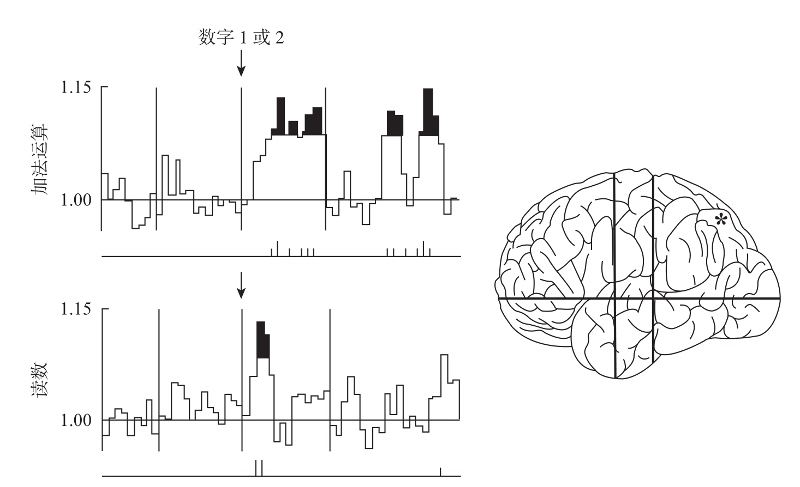

尽管脑电图已为现有研究做出了许多重要贡献，但它仍然是一种间接的、不够精确的手段，必须等到成千上万的神经元细胞同步激活之后，才能够从头皮上检测出它们的电信号。神经科学家一直梦想能有一种技术，使他们能够考察人脑中单个神经元激活的时间模式，就像常规的动物实验一样。从某种程度上来讲，这种技术已经实现了。在个别情况下，实验者会把电极直接植入人类大脑皮层，但是这项技术极具侵害性，只允许在非常特殊的情况下使用。例如，对于一些患有顽固性癫痫的患者，必须使用神经外科手术来移除引起癫痫发作的异常脑组织，植入颅内电极仍然是最有效的确定这些脑组织具体位置的方式。具有多个电位记录点的细针被深深地插入患者的大脑皮层及皮层下的神经核。这些电极通常会保留很多天，用来收集足够多的癫痫重复发作时的数据。在患者同意的情况下，我们当然可以利用这种设备来研究人脑神经元对信息的加工。通过植入的电极，我们可以在患者读词或是进行简单的运算时直接记录人脑的电活动。我们可以测量出一个体积很小（几立方毫米）的皮层内的神经元活动的平均值，甚至是单个的神经元活动，这取决于电极的不同性质。
在圣彼得堡的一家脑研究中心，亚尔钦·阿卜杜拉耶夫（Yalchin Abdullaev）和康斯坦丁·梅尔尼丘克（Konstantin Melnichuk）使用这种方法，记录了患者在进行数学和语言任务时顶叶皮层中一些单个神经元的活动情况15。在第一种条件下，屏幕上呈现一系列数字，患者需要累加计算出数字的总和，将这种条件与控制条件进行对比，在控制条件下患者只需要出声读出同样的数字。在第二种条件下，患者要对两个数字进行加法或者减法运算，例如54和7，同样，控制条件下只要求被试出声读出这两个数字中的一个。第三种条件与数学无关，需要判断一个字母串，如“horse”或者“torse”是不是真实的英语单词。
结果一目了然。只有当数字呈现的时候，位于大脑两个半球下顶叶脑区的神经元才会得到激活。大部分神经元的放电在进行计算时比单单读出这个数字时要强。但是，少量位于右顶叶皮层的神经元在仅仅读到数字1和2的时候也会出现放电频率的增加。当被试读数字的时候，这些神经元仅在数字呈现之后很短的一段时间内处于激活状态，从300毫秒到500毫秒。但是在被试进行加法和减法运算时，它们的激活状态可以持续到视觉刺激呈现之后800毫秒时（见图8-7）。

箭头所指之处表示阿拉伯数字1或2呈现的时刻。图中用黑色标记出了神经元放电频率显著有别于基限水平的持续时间。当被试对数字进行累加时，神经元活动持续的时间长于仅仅把数字出声读出来。
图8-7 在进行数字加工时，人脑顶叶皮层的神经元活动持续时间更长
资料来源：改编自Abdullaev & Melnichuk, 1996。感谢Y. Abdullaev。
神经元记录的结果为我们通过神经心理学、PET、脑电图等方法获得的推论提供了支持。一旦我们需要在心理层面操纵数量信息，下顶叶皮层回路就起着至关重要且非常具体的作用。
当然，本章报告过的这些零零碎碎的实验只能代表脑成像研究的开端。直至20世纪90年代，对活动中的人脑进行可视化的工具才开始普及。仅在数学研究领域，就存在着诸多从未被探索过的问题。顶叶神经元是否仅对特定的数字做出反应？下顶叶区域如何对数量表征进行组织，是否系统地按照数量的大小把它们表征在皮层的不同的位置？加法、减法和数字比较是否涉及不同的脑回路？这些脑回路的组织是否会因为年龄、数学教育程度或心算能力的区别而不同？下顶叶区域还与其他哪些脑区有联系？另外，它是怎样与包括负责对数词以及阿拉伯数字进行识别和命名的脑区在内的其他脑区进行联系的？
我们对这一广阔领域的了解非常有限，还可以列举出无数亟待解决的问题。随着新的脑成像技术的不断开发应用，我们对于人脑的科学探索其实才刚刚开始。从神经回路到心算、从单个的神经元到复杂的算术功能，认知神经科学发现了不同脑区之间越来越多的紧密联系，展现给我们一个在复杂程度上远远超出想象，也更加引人入胜的广阔前景。对于神经元组织怎样变成“思维的物质”16，这种说法来自让-皮埃尔·尚热和阿兰·孔涅，我们只见到了冰山的一角。请拭目以待，因为在接下来的10年里，关于大脑，这个使我们成其为人的特殊器官的研究，将会取得更多激动人心的成果。